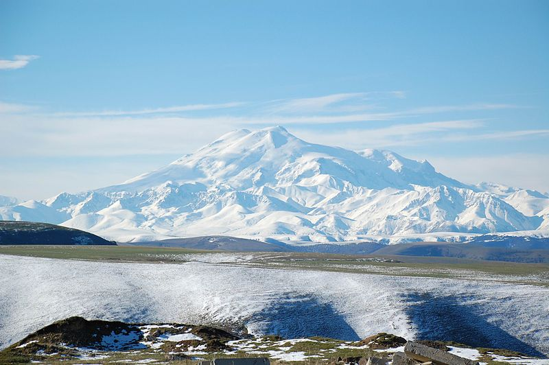
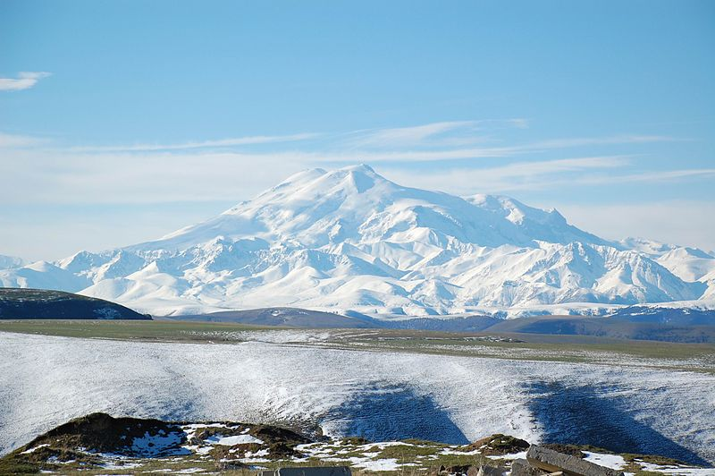

Mount Elbrus (Russian: Эльбрус, tr. Elbrus, IPA: [ɪlʲˈbrus]; Kabardian: Ӏуащхьэмахуэ, romanized: 'uaşhəmaxuə; Karachay-Balkar: Минги тау, romanized: Mingi Taw), is the highest and most prominent peak in Russia and Europe. It is situated in the western part of the Caucasus and is the highest peak of the Caucasus Mountains. The dormant volcano rises 5,642 m (18,510 ft) above sea level; it is the highest stratovolcano in Eurasia, as well as the tenth-most prominent peak in the world. The mountain stands in Southern Russia, in the Russian republic of Kabardino-Balkaria.
Elbrus has two summits, both of which are dormant volcanic domes. The taller, western summit is 5,642 metres (18,510 ft); the eastern summit is 5,621 metres (18,442 ft). The eastern summit was first ascended on 10 July 1829 by Khillar Khachirov, and the western summit in 1874 by a British expedition led by F. Crauford Grove and including Frederick Gardner, Horace Walker and the Swiss guide Peter Knubel. 8-year-old Gandham Bhuvan Jai became the youngest person to summit Mount Elbrus in September 2021.
The name Elbrus /ˈɛlbrəs/ seems to have a connection with Alborz[8] (also called Elburz), which is also the name of a long mountain range in northern Iran, but the two should not be confused. The name is derived from Avestan Harā Bərəzaitī, a legendary mountain in Iranian mythology. Harā Bərəzaitī reflects Proto-Iranian *Harā Bṛzatī, which was reformed into Middle Persian as Harborz, and into Modern Persian as Alborz.[8] Bṛzatī is the feminine form of the adjective *bṛzant ("high"), the reconstructed ancestor of Modern Ossetian bærzond ("high", "peak"), Modern Persian barz ("high"), berāzande ("elegant"), and boland ("high", "tall"),[8] and Modern Kurdish barz ("high"). Harā may be interpreted as "watch" or "guard", from Indo-European *ser ("protect"). The name "Mingi Taw" used by Karachays and Balkars means "Eternal Mountain" in Turkic.
Elbrus is situated in the northwest of the Caucasus, 100 kilometres from the Black Sea and 370 kilometres from the Caspian Sea, from where it is possible to see it in exceptionally clear weather. It rises 5,642 metres above sea level, and is the highest point of the Caucasus Mountains. Located eleven kilometres north of the Greater Caucasus Watershed, marking the border with Georgia, it is shared between the respective territories of the Russian republics of Kabardino-Balkaria and Karachay-Cherkessia. It is the highest peak in both Russia and Europe, far ahead of Mont Blanc in the Alps, which rises 4,809 metres above sea level.